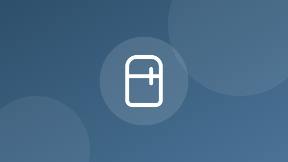

Aliments sans cuisson pour le kit d'urgence : la liste
Le guide « Tous responsables » demande de la nourriture non périssable et qui ne nécessite pas de cuisson : en cas de coupure, ni plaque, ni four, ni micro-ondes, ni frigo. Voici une liste concrète d'aliments qui se mangent tels quels et se gardent des mois.
La liste des aliments qui se mangent tels quels
Protéines
- Thon, sardines, maquereaux en conserve
- Pois chiches, haricots, lentilles en conserve (déjà cuits)
- Plats cuisinés en conserve qui se mangent froids
- Beurre de cacahuète, amandes, noix
Féculents
- Crackers, biscottes, pain suédois
- Biscuits secs, barres de céréales
- Céréales du petit-déjeuner
Fruits et légumes
- Compotes en gourde ou en pot
- Fruits au sirop, macédoine en conserve
- Fruits secs : abricots, raisins, dattes
Le reste
- Lait UHT en petites briques
- Petits pots pour bébé si besoin
- Chocolat, sucre : de l'énergie rapide
- Nourriture pour les animaux
Les règles pour bien choisir
- Petits formats : une boîte entamée ne se garde pas sans frigo. Mieux vaut des portions qui se finissent en un repas.
- Ouvre-boîte manuel : indispensable, ou des boîtes à ouverture facile. Le guide le cite dans le kit.
- Ce que vous aimez : en situation de stress, on mange mieux des aliments familiers. Évitez les achats « spécial survie » que personne ne touchera.
- Allergies et régimes : adaptez la liste à chaque membre du foyer.
- Sel : les conserves salées donnent soif. Elles comptent dans le calcul de votre réserve d'eau.
Faire tourner le stock
Le plus simple est de piocher dans le kit au quotidien et de racheter aussitôt : les produits restent frais et rien n'est gaspillé. Le guide demande de vérifier les dates de péremption au moins deux fois par an. L'appli Tous prêts garde la liste et la date de votre dernière vérification.
Informations pratiques, sources officielles (guide « Tous responsables » (SGDSN, 2025)). Elles ne remplacent pas les consignes des autorités. En cas d'urgence, appelez le 112 et suivez les consignes de la préfecture, de la radio et de FR-Alert.
Questions fréquentes
Que manger pendant une coupure d'électricité ?
Des aliments qui se mangent sans cuisson ni frigo : conserves de poisson ou de légumineuses, crackers, compotes, fruits secs, barres de céréales, lait UHT.
Combien de nourriture prévoir pour 72 heures ?
Le guide ne donne pas de quantité : prévoyez trois jours de repas habituels pour chaque personne, en petites portions.
Faut-il acheter des rations de survie ?
Non, des aliments du supermarché suffisent. Choisissez ce que votre famille mange déjà.
À lire aussi


Frigo et congélateurFrigo fermé : environ 4 h. Congélateur plein : environ 48 h, à moitié plein : 24 h. Les bons gestes pendant la coupure et quoi jeter ensuite. Un kit pas cherComment constituer un vrai kit d’urgence 72h à moindre coût avec ce que vous avez déjà. Liste officielle + ce qu’il faut vraiment acheter. Sans gaspillage.
Un kit pas cherComment constituer un vrai kit d’urgence 72h à moindre coût avec ce que vous avez déjà. Liste officielle + ce qu’il faut vraiment acheter. Sans gaspillage.